Future DataOps PPFG Data Product
«Requirements mapping»
Digital Well Planning / Pore Pressure and Fracture Gradient (PPFG) curves for use in Well Engineering, in the planning phase / DWP
Template usage
This template is used as a template for requirements specifications. Not all chapters need to be filled out, but the template should be seen as a checklist. We only fill out what is necessary and relevant.
| Metadata |
|---|
| Author: Henrik Næsgaard / Data Product Support Team Date: 2024.09.XX Version: Draft 1.1 |
Document Control (Mandatory)¶
Template History¶
| Who | Revision | Date | Comment |
|---|---|---|---|
| Alexander Tharaldsen | Final 1.0 | 29.05.2024 | Template created |
Document History¶
| Who | Revision | Date | Comment |
|---|---|---|---|
| Henrik Næsgaard | Draft 0.0 | 10.06.2024 | Draft Version 0.0 |
| Henrik Næsgaard | Draft 1.0 | 07.07.2024 | Draft Version 1.0 + attempted to adjust for new Template (Final 1.2) |
| Frode Efteland | Draft 1.1 | 12.11.2024 | Draft version 1.1. Comments and changes by the Data Product Support Team. |
Action List¶
| Who | Task | Comment |
|---|---|---|
References¶
| Description | Link |
|---|---|
| PPFG to EDM Solutioning by DWP team | https://miro.com/app/board/uXjVPlZxm5E=/ |
| Data Product Canvases for PPFG as used when applying Guideline to practical use case | https://miro.com/app/board/uXjVNeiYapo=/ |
| TR for PPFG Prediction | 51-001183 Guideline for pore-pressure fracture gradient prediction (PPFG) and well stability (WBS) |
| TR for PPFG Forecasting | 51-000566 Technical Requirements for Pore, Fracture and Collapse Pressure Forecasting |
| PPFG Review template | 51-001619 PPFG review template |
| Latest IOGP Report | IOGP Report 608 - Recommended practice for pore pressure and fracture gradient analysis for well design – construction, intervention, and abandonment |
Purpose of the Project (Mandatory)¶
Project Goals¶
Project goal(s):¶
-
Expose PPFG curves to WellMate (Necessary delivery for the Drilling Program for Yggdrasil by August 2024)
-
Expose PPFG curves to DWP (Drilling Engineers in ABP for Well Engineering including Casing Design, Trajectory, Operational Parameters, BHA, Bit, Drilling Fluid, Cementing, Kick Tolerance, Integrity/Barrier tests, Detailed Drilling Procedures. In planning phase, this is represented by Digital Well Planning (DWP). ABP Christian Jacobsen is PO.)
-
Expose PPFG curves to DWOS (Needed data to allow for any work to be performed in DWOS from training to engineering simulations; the bread and butter of the DWOS. Full application listing for engineering: WellPlanner, DrillExpect, DrillScene, WellPlan, DFG RTE.)
-
Expose PPFG curves for the CWP session (for multidisciplinary visualisation)
-
Expose PPFG curves to DWA (Necessary input for the Advisory systems for automation drilling)
-
Expose PPFG curves to Sitecom WellAdvisor
-
Expose PPFG curves to central repository for tracking of decision-making and for general availability of Data Products in AkerBP. This is proposed solved in FDP and ADME, but the benefit/cost/timeline of this sustainable integration, needs to be evaluated against quicker point-to-point implementations.
-
Expose PPFG curves to Gravitas
Timeline:¶
Successfully launching this project would generate significant value and cost savings, particularly if it is completed before Q3 2024 (1st August 2024), when the Yggdrasil operation is scheduled to commence.
Background¶
There are several initiatives that need the PPFG data, but the one that has the highest priority (from the point of view of Henrik Næsgaard) is WellMate (the Digital Drilling Program). This initiative needs the PPFG by August 2024. The importance of the WellMate delivery cannot be restated in fullness here, but can be attempted summarized by underlining that the Yggdrasil Team has stated that they will not be able to create Drilling Programs in time due to insufficient resources, unless a digital solution is presented that can automate some of the workflow. The transfer of subsurface data (including PPFG) is in scope for this.
Since automation by August 2024 was not reached, the WellMate team has bought some time by gaining priority with the DWP team for a manual Excel import of the required curves for Well Engineering according to BMS. This solution is only temporary, a more automated dataflow MUST be instated. The required curves are listed below.
-
Pore Pressure (PP) P5-10
-
Pore Pressure Expected
-
Pore Pressure High P95-99
-
Fracture Gradient (FG) P5-10
-
Fracture Gradient Expected
-
Fracture Gradient P95-99
-
Minimum Horizontal Stress (Shmin) P5-10
-
Minimum Horizontal Stress (Shmin) Expected
-
Minimum Horizontal Stress (Shmin) P95-99
-
Collapse Gradient (CG) Expected
-
Overburden Gradient (OBG) Expected
Below is presented a typical PPFG plot as completed in Gravitas for the Drilling Program, for visualisation (format: pdf snippet).
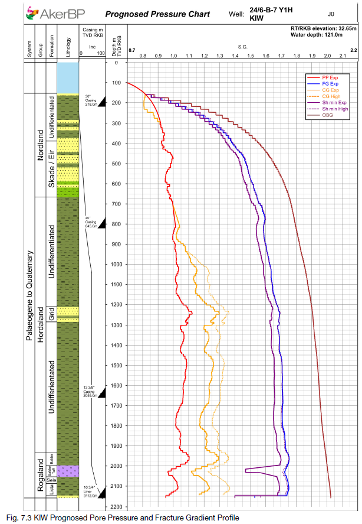
It is also the belief of the WellMate team that pulling the PPFG data from EDM/DWP makes sense from the perspective that the Drilling Program should summarize the data that was used for the Well Design (which is carried out in EDM/DWP). Combined with a general desire to expose data to all, the team hopes that a solution for exposing data to EDM can be extended to any other subscriber.
From an operational safety perspective, it is an absolute necessity to expose and govern this data as input for Well Engineering. A few examples (among thousands) for usage areas are casing loads, operational window during drilling, selection of drilling tools, trajectory optimization, etc... These data form the decision input package for the well design and operational planning. If erroneous, it could lead to operational events such as kicks and losses. Conversely, better data quality can green-light less over-designed wells, reducing cost. The correct implementation strategy will result in mitigating barriers against poor engineering, reduce risk, duplication of data resulting in ungoverned data, etc...
Business case¶
Although not defined as "safety critical", PPFG should be defined as such, as the highest impact outcome could be a blowout with loss of life. One level lower of impact, we find the cost implications of long operational delays due to losses, kicks and wellbore instability. On a lower level of impact, we find costs incurred through poorly coordinated well designs. Reduction in downhole operational events of 3% across assets over 2 years. Reduction of capex cost of well design reduced by 5% across assets over 3 years.
Stakeholders (Optional)¶
Main stakeholder
[NAME] the <CHARACTERISTIC> Drilling Engineer Henrik, Member of Yggdrasil Well Engineering Team. 36 years young and well-built (athletic). Many more positives too list, but space is limited. Extremely humble. “I have done well designs several times before and know of the tedious process” “I value quick iterations for more sensitivities for more accurate engineering. I despise governance issues and spending unnecessary time on coordination” |
Routines (to pinpoint challenges) [Henrik] needs to
|
Wishes he has The wishes should be prioritized:
|
|---|---|---|
Goals
|
Tools Everyday, Henrik uses ….
Sometimes, [he] uses…..
|
|
Person does not need:
|
||
Other key Stakeholders
| stakeholder | Needs |
|---|---|
Customer (Asset/BU/Dept) Drilling Engineers Completion Engineers Lead Engineers Asset Leads |
Needs the Well Design data. Needs the Well Design data. Accountable for Well Design (cost/HSE, etc..) Accountable for Well Design (cost/HSE, etc..) |
| Customer's Customer (VSM/User) | |
Other Stakeholders Rock Mechanics Subsurface EXPRES Geology Geophysicist |
Owner of the Data Provides input to Data Provides input to Data Provides input to Data Provides input to Data |
Personas PPFG user PPFG provider |
Subscriber/consumer Creator/owner |
Terms and Definitions (Mandatory)¶
| Term | description |
|---|---|
| ABP | AkerBP (Company) |
| ALARP | As Low As Reasonably Practicable |
| API | Application Programmable Interface |
| AS RUN | Status when completed after Execution (aka Post-Drill or Actual) |
| Backbone | Database solution provided by Keystone |
| BEST | Terminology applied to subsurface curves for the “latest and greatest” |
| BHA | BottomHole Assembly (equipment) |
| BMS | Business Management System |
| BOWK | BlowOut and Well Kill (module in DWP) |
| BU | Business Unit (organisational department) |
| CG | Collapse Gradient (aka Wellbore Stability WBS curve) |
| COMPASS | Application for Directional Planning by Halliburton |
| Csv | File format |
| CWP | Collaborative Well Planning (process) |
| DG | Decision Gate (process milestone) |
| DFG RTE | Halliburton software for real-time Fluids/Hydraulics |
| DSG | DecisionSpace Geosciences application by Halliburton |
| DSIS | Data transfer solution (Halliburton systems) |
| DWA | DWA: Digital Well Automation, platform installed on-site for sharing of data and drilling advisory. |
| DWOS | DWOS: Drilling Well On Simulator, Simulator training and Engineering Simulations in the ABP OCC (Onshore Collaboration Center). |
| DWP | DWP: Digital Well Program, Halliburton software for Well Engineering. |
| DWX | Digital Well eXchange. Data transfer method by Halliburton (Kafka) |
| EDM | Engineering Data Model. Database for DWP. |
| EXPRES SME | EXPlorationREServoir Subject Matter Expert |
| FA | Friction Angle (Rock Mechanics curve) |
| FDP | Field Development Plan. Application for Asset Management by Halliburton |
| Execution | Project state for D&W, equivalent to DG3-WG2, during drilling of the Well. |
| HSE | Health, Security and Environment |
| ID | Identifier |
| IDOS | IDOS: integrated Design of Service, Halliburton software for managing Service Company Engineering deliverables. |
| IOGP | International Association of Oil & Gas Producers |
| KIND | Term used in OSDU Standard for the Schema name and version. |
| LAS | File format |
| MSL | Mean Sea Level. Often used as datum for Well Operations. |
| OBG | Overburden Gradient (Rock Mechanics curve) |
| OpsGeo | Operational Geologist (role) |
| OSDU | OSDU: data platform for Energy companies |
| OW | OpenWorks software by Halliburton |
| Petrel | Software by Schlumberger |
| Petrel Studio | Software by Schlumberger |
| Planning Phase | Period extending from pre-DG0 to DG3-WG2 (start of Execution). |
| PO | Project Owner (role) |
| Post-Drill | State after completion of relevant operational step in Execution (aka AS RUN or Actual) |
| PostGres | PostGreSQL Database system |
| PPFG | PPFG (Pore Pressure and Fracture Gradient): Curves indicating the pressure in the formation pores and the strength of the rock. In practice, these are used as minimum and maximum energy limits to apply to the hole being drilled. OSDU PPFG def: _Pore Pressure and Fracture (Pressure) Gradient (PPFG) data describes the predicted (Pre-drill) and actual (Post-drill) depth-related variations in overburden stress, pore pressure, fracture pressure and minimum principal stress within a wellbore and conveys the range of uncertainty in these values given various plausible geological scenarios. PPFG predictions are fundamental inputs for well design and construction and estimates of pore and fracture pressure are typically provided to the well planning and execution teams. |
| Pre-Drill | State prior to operational Execution, hence estimations and predictions from the Planning Phase. |
| PVT | Pressure, Volume and Temperature. Dataset giving characteristics of an object under variations of these three parameters. |
| QAQC | Quality Control and Quality Assurance |
| Record | A populated schema |
| RM | Rock Mechanics (AkerBP Business Unit. Owners of PPFG) |
| ROCQ | Company providing data transfer solutions |
| Schema | Structure of datafile. Not a Record. |
| SCWA | SCWA: SiteCom WellAdvisor |
| Shmin | Minimum Horizontal Stress (Rock Mechanics curve) |
| Snapshot | Captured copy of record at the time of snapshot trigger |
| Stresscheck | Application for casing design by Halliburton |
| TR | Technical Requirement |
| Trajectory Loop | Abstraction of the non-existing digital process of looping the trajectory between Subsurface and Drilling BUs, while attaching updated datasets (including PPFG) |
| TVD | Terminal Vertical Depth (or Total/True Vertical Depth) |
| UCS | Unconfined Compressive Stress (Rock Mechanics curve) |
| UX | User eXperience (design term) |
| WBS | Wellbore Stability (aka Collapse Gradient. Rock Mechanics curve) |
| WellMate | Digital Drilling Program: Software that pulls information from different source to auto-generate the Drilling Program. |
| WITSML | Wellsite Information Transfer Standard Markup Language (data exchange standard) |
| WKS | WKS: Well Known Schemas; current approved schemas of the OSDU standard |
Relevant Facts and Assumptions (Optional)¶
Relevant Facts¶
Assumptions¶
| Assumption | Project Phase | Status | Replaced by Requirement |
|---|---|---|---|
| PPFG needs to be locked to a Well Design_ID (trajectory). | N/A | N/A | N/A |
| Can come through CWP session or from Petrel. The mechanism is not really important to the Drilling Team; as long as it is defined and supported by the Subsurface team. | N/A | N/A | N/A |
| Will be governed in FDP, stored on OSDU. DWX as transfer mechanism. | N/A | N/A | N/A |
| Keep only at PPFG for now (do not include Picks and other Geomechanical curves such as UCS and FA). | N/A | N/A | N/A |
| The assumption must be made that the updates are pushed from Petrel Studio (for simplicity). | N/A | N/A | N/A |
| The assumption must be made that the updated PPFG curves are stored in PostGres when the destination is DWP/EDM (to not disrupt EDM engineering or crash EDM). | N/A | N/A | N/A |
| If we build a system with no notification system, there should be some human-relatable attribute to the flow such that we can verify through something simple like the name. (to build trust. Hence retain the name across applications.) | N/A | N/A | N/A |
| A microservice will be needed for coordinate system Conversion, when sharing across applications. | N/A | N/A | N/A |
| Collapse Gradient is calculated based on microservice that uses PP as input. | N/A | N/A | N/A |
| Petrel understands Well/Wellbore hierarchy. | N/A | N/A | N/A |
| Exchange of data is done at Wellbore level, not Well level. | N/A | N/A | N/A |
| Explicitly, this request is for planning PPFG only. Not execution or AS RUN PPFG. | N/A | N/A | N/A |
| Petrel Studio will not propose new trajectories. | N/A | N/A | N/A |
| DWP will not propose new PPFG, WBS or Formations. | N/A | N/A | N/A |
| It is NOT possible to retain the trajectory_ID upon copying designs in DWP (EDM). | N/A | N/A | N/A |
| It is very challenging to retain Design_ID (or the ID of the EDM trajectory: definitive_survey_header_id) across the trajectory loop Petrel Studio->CWP->EDM->Petrel Studio. | N/A | N/A | N/A |
| Should strive to have an open API for ingestion of PPFG for DWP (better for R&D -> more urgency and buy-in). Avoid ABP-customized solution! | N/A | N/A | N/A |
| Petrel Studio user can observe desynchronization against DWP trajectories. | N/A | N/A | N/A |
| There is no way for the Petrel user to know if the trajectory has had minor changes since last pull. This is NOT covered by ROCQ governance. | N/A | N/A | N/A |
| From an Operational standpoint, it would be advisable to have the curves separated by Overburden/Reservoir. The process to create the Reservoir curves is usually more complex due to its criticality (this sentence to be confirmed/reviewed by EXPRES SME). | N/A | N/A | N/A |
Scope of Work (Optional)¶
Current Situation¶
-
Excel import in EDM
-
Limited to 2 curves
-
No governance
Work Context¶
In context with Well Design BMS.
MVP scope¶
-
Deliver Yggdrasil PPFG data from Delfi in a consumable format for DWP.
-
The format should be OSDU ready.
Functional Requirements (Mandatory)¶
| **Requirement ID** | **Requirement Name** | **Description** | **Priority** | **Source** | **Acceptance Criteria** | **Use Case/Scenario** | **Actors/User Roles** | **Dependencies** | **Non-functional Attributes** | **Assumptions** | **Comments/Notes** |
Guidelines for Data Products, apply the following best practices:
-
Identify and prioritize candidates for the Data Product approach, to ensure best possible use of resources and reduce risk.
-
Design a new Data Product as a minimum viable product to ensure early usage and value outtake.
-
Ensure that the data is produced according to the Data Product design, and verify and validate its consistency before sharing.
-
Before making the Data Product ensure that it is fit for the purpose you want to apply it for.
Schema and Semantics, Lineage¶
-
See chapter on Schema in “Ideas for solutions” (Proposed schema)
-
PPFG includes a reference to a trajectory, Wellbore and Well
-
PPFG schema should be as OSDU WKS compliant as possible.
-
PPFG schema should detail which model was used, author, date created and typical metadata (lineage).
-
PPFG should be made on communicated assumptions (assumptions described by Owner in the record or defined as part of Data Product description in Catalogue or addressed by standardized input workflow or otherwise communicated to consumers)
-
From an Operational standpoint, it would be necessary to have the curves by wellbore.
-
From an Operational standpoint, it would be advisable to have the curves separated by Overburden/Reservoir. The process to create the Reservoir curves is usually more complex due to its criticality (this sentence to be confirmed/reviewed by EXPRES SME). For the Final Well Report Section A - Geology we usually log the Overburden separately from the Reservoir (including for PPFG reporting).
-
“BEST-curves” is the terminology used in ABP for the best curves available at any point in time. Correct terminology and classification to be done in schema.
-
The PPFG curves should ideally be made available as a range (min, exp, max or their P10, P50 and P90 equivalents).
-
“Min/exp/max” curve is a “Drilling Engineer term”. Subsurface team relates differently to the uncertainty of geomechanical curves. Correct terminology and classification to be done in schema.
-
Datum assignment. As per the schema. Probably the PPFG (from OpenWorks or Petrel) needs to be on a standard datum, where MSL is the system default in EDM.
-
The ‘PPFG forecast’ shall capture the expected pore and fracture gradient and its range of uncertainty as function of depth. The output from Petrel/Delfi, shall follow the technical requirement specified in D2 51-000566. Additional technical detail can be found in document 51-001183: Guideline for porepressure fracture gradient prediction (PPFG) and well stability (WBS)
-
Need to update this document if it changes ExpRes workflow. See section 8.1 Digital Archives.
Architecture, validations¶
-
PPFG validation microservice should validate the schema wrt to Business Rules
-
PPFG transactions should be logged in FDP for in-depth analytics of the Well Design process, store decisions and to take up dormant projects at a later date.
-
PPFG should not be copied multiple times into several consumer applications and use cases, using conventional means/manual work
-
PPFG should be exposed to other initiatives than DWP (DWA, IDOS, CWP, DWOS, WellMate, SCWA).
-
DSIS query towards OW needs to have a delimiter on Design_ID. Trajectory_ID limitation is also nice-to-have. The assumption is that a "significant enough change" triggers a copy of the EDM design with a renaming of the design (entirely manual process). The name change would be something along the lines of "30/11-F-2 A_Rev B0" to "30/11-F-2 A_Rev C0". The copy of the design would generate new IDs for the design and all data attached to it (including def_survey_header_ID). This means the lineage and versioning of the trajectory and design (and everything else) is not maintained adequately regardless. This in turn, means that it is not required to send over both Design_ID and Trajectory_ID, where Design_ID is sufficient. We can do it from an additional QAQC standpoint and with the future in mind. Question: can we retain these IDs throughout the loop EDM->Petrel Studio->OW->Petrel Studio?
Governance and versioning, Ownership¶
-
Digital logging and storage of PPFG should be iterative and Decision-Gate-Less
-
Versioning of the PPFG is imperative
-
Solution needs to map out whether there is a requirement from Drilling Engineers on whether to not trigger a PPFG update. In other words, is it worthwhile to define “a big enough change” to require a new PPFG iteration? Do they want a choice for: “A change in the trajectory has been detected, do you want to trigger an iteration now?”. What does “updated/changed mean”? Assume it is “a big enough change” that would trigger a Design copy in EDM and a new Design with new trajectory name.
-
Unless we snapshot the Trajectory on export from DWP, how can we rightfully import PPFG based on trajectory_ID? The trajectory may have been changed. Only barrier is a forced copy of design and store in EDM for every significant change ("significant change is when you should request PPFG update; minor change should not trigger new loop and is hence acceptable). Every major change should then force a new design with a new trajectory (and trajectory_ID). Every request to Petrel should then be a consequence of a major change (and new design, trajectory and trajectory_ID in EDM). This means that trajectory_ID is ONLY useful for the DWP PostGres import locked to Trajectory_ID. This workflow is very demanding for the users and riddled with pitfalls.
-
The solution needs to be reviewed by Rock Mechanics. “We do need to assure the data owners in rock Mech that the data used is "theirs" - this is critical to get trust.”. “We need a clear path for verified, recognizable data from the source model (petrel) to the targets needing it.”. “The Rock Mech engineers are not your typical petrel user - we will need to make sure they are on board.” We need the proposed workflow to be verified by Rock Mechanics team
-
What are the issues we are aware off?
-
What is their workflow?
-
Address these issues in our proposal before engaging the Rock Mechanics Team
-
The solutioning of the PPFG data exposure has shown to require standardization in the workflow within Petrel to ensure that we get consistent input. This is being worked on by Pete Heavey.
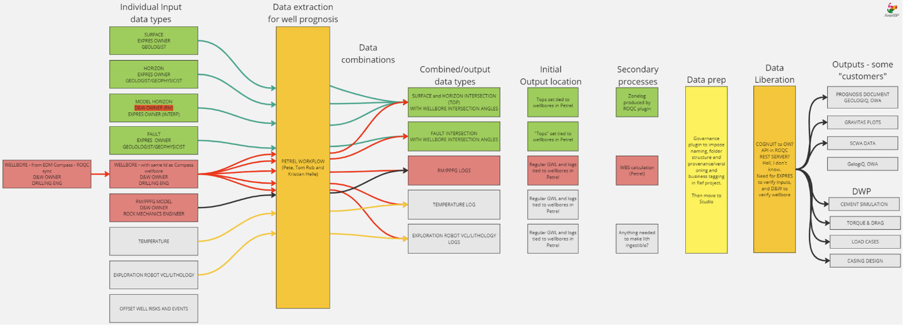
Security¶
-
Access control should be managed
-
A notification system is necessary due to potential impact of erroneous information on Well Design.
Related Initiatives: DWP¶
-
See Chapter “Related Initiatives” in Ideas For Solution for dependencies (Related initiatives).
-
Detection/Notification of desynchronization. DWP User to be notified that a change has happened on trajectory and that the geological data might be outdated, and then have the ability to request new data. OR in the perfect world with automation, as soon as a change has occurred user automatically passes the trajectory to get data updated. Note: If user duplicates a full design, and modifies PPFG, DWP will recalculate everything based on this change using the old data, this means there can be a risk at users do not update the data.
-
First version: Just a notification in DWP. Could be a text string on the component itself, “Have you updated your trajectory in Compass? Do you need new geo data? Click here”
-
Trigger for new trajectory loop. Is it required to have a trigger for the Drilling Engineer to ask for a PPFG update or is the current Petrel Governance tool sufficient?
-
We need a PPFG request button in DWP. First version, when the user thinks it is a big enough change to trigger a new data request from subsurface. Assumed any change is resulting in a new design in EDM as per process in EDM to day (minor or major change, a new design is always made)
-
Ability to request update on data package if a trajectory has been changed/updated. Challenges: is this a button outside of DWP?
-
Lock DWP Design while trajectory loop is in progress/updating. When new PPFG data is requested, how do we stop engineers from modifying the trajectory in the middle of waiting for the updated data? Especially in a semi-automatic world. Can we lock design until data has been made available and user "imports" this data to the design? Consider linking this to “significant change”, since a significant change in trajectory is the only likely trigger.
-
I need to understand why this would be needed. Also, pending solutioning, there could be no "requests for new PPFG"; they are just made as a result of monitoring for new trajectory updates (well name and "synced?"-checkbox in Petrel).
-
When new data is requested, how to we stop engineers to modify the trajectory in the middle of waiting for the updated data? Especially in a semi-automatic world. Can we lock design until data has been made available and user "imports" this data to the design?
-
Notification of new PPFG available. A DWP notification that the PPFG data has been received would be nice. Who has sent the data should also be available. One solution is to pull the date from OW, from which the logical deduction is that we need a notification system in DWP on new PPFG available in OW.
-
Limiting import choices to correct trajectory only. When importing PPFG data, DWP user should ONLY be able to select the relevant data. The problem today is that users can go into ANY project and select ANY well to import data, disregarding what design they are actually working on. Can we re-use the interface we have (OpenWorks import), but selection is filtered down to only relevant project in DSG? This probably demands that the trajectory_ID is maintained. Other solutions just slightly limit the number of wrong choices.
-
Drilling Engineer requires to see the correct Design name (or some other recognizable metric) when pulling the data from OW. How can that person confirm visually (non-data technical), that what is being done is correct?
-
DWP requirement: The user must see Design_Name for import, even though the requirement/filter is by the def_survey_header_ID ("trajectory_ID").
-
Prevent changes/alterations of subsurface data in DWP. Should not be possible to edit PPFG data in DWP. If engineers want to make a separate version for any sensitivities, they should do so by creating a separate version, and this version should also be clearly marked as “not original”.
-
Insufficient resources. Need to review solution in DWP team for re-allocation of resources.
-
Can we in DWP rename to "Pull from External source" for the Subsurface Essentials? Even though the OpenWorks connection should be an easy sell, it would be good to aim for something generic (both from DPW R&D Cores point of view and in view of our midterm goal of pulling from OSDU).
-
Strong dependency on naming convention, since other EDM copies of the design are made for, among others, Sensitivity analysis
-
There needs to be a common understanding that updates to trajectory are made by adequately copying the EDM design and strictly adhering to the naming convention. Then, the Petrel user needs to monitor, on his own accord, for updates to trajectory. They will need to identify by naming convention what necessitates a new PPFG. They need to make the decision, on their own accord, to push a new updated PPFG. The DWP user needs to, on his own accord, query the OW database until the update appears and grab the update.
-
Sensitivities: Casing design, Torque and drag, Hydraulics, Casing setting depths, Reservoir lengths, BHA design, Fluid design
-
We are allowing both pull from OW and manual upload, hence the loop WILL be broken. This is acceptable as long as the manual upload is seen as an informed decision to amend the data (short time during execution). The problem is that this will not be captured by non-DWP users; they will need to be comfortable with what is in OW. This is tolerable in the short-term.
Related Initiatives: WellMate (Digital Drilling Program)¶
-
See Chapter “Related Initiatives” in Ideas For Solution for dependencies (Related initiatives).
-
Requirement from WellMate: The data needs to be exposed in a way that works for InformatiQ.
-
It is assumed that a solution that works for DWP and InformatiQ, works for anyone. DWA, IDOS and DWOS are interested parties.
-
(re-use of the limiters in the DSIS query)
Related Initiatives: CWP¶
-
What is the connection with CWP FDP team? What is the delta to make this workflow "FDP-compliant"? Does it make sense to pursue it?
-
As far as I know the CWP FDP process transfers Targets and Trajectory currently to EDM. How much work is it to expand this with PPFG? If it takes 1 month more with this solution as it connects to FDP, it is worth to do beyond any doubt.
-
What is the difference in technical solution between transferring trajectory and transferring PPFG, WBS and formations? In other words, when we have a working trajectory loop, adding more data to the loop is "just" a matter of expanding the exposure capability and building out import workflows (this is up to each department).
Maturity/workflows and Lineage¶
If not covered above, the requestor will answer these specific questions:
-
When do you need the Data Product with regards to maturity? (always latest? Only the version signed in FDP for Decision Gate 3 pass? Whenever Drilling Engineer makes an update in Execution?)
-
Answer: There should be loop for the trajectory, where a defined subsurface data package updates as a result of the trajectory change. Hence, at any stage a change in trajectory is submitted.
-
What do you need to know in order to trust the data you receive? (What parameters do you need in the schema? Do you need to know what model was used? Do you need to know the author? Do you know how to use the range of data you are receiving; which in the dataset should you use?)
-
Answer: Yes, I need all this information in the schema.
Non-functional Requirements (Mandatory)¶
General design guidelines for non-functional requirements
-
Company Enterprise Reference Architecture, which includes
-
Architecture & Data principles
-
Architecture & Data standards/guidelines.
-
Data management fundamentals
-
Company data product framework
-
BMS process for defining data products
-
Guidelines described in DIGIpedia
-
OSDU framework
-
The data product will initially be developed with minimal data governance, with governance gradually introduced in iterations until it aligns with the business ambition.
-
300 concurrent users
-
Data Availability: internal
-
Data Confidentiality: internal
-
Data Integrity: High impact (blowout highest outcome)
-
Performance: A transaction should take less than 5 minutes, but this is expected to be substantially reduced over time with better solutions and better computation abilities.
-
Several concurrent transactions should be able to be handled
-
Several concurrent contributors should be able to be handled.
-
Governance requirements listed in Data Product Key Elements - AkerBP DIGipedia
Ideas for Solutions (Optional)¶
Proposed workflow¶
-
What we are currently prioritizing is to be able ingest PP-FG data to DWP with the cross reference to what trajectory it belongs to (was calculated based on).
-
From an automation perspective the trigger for the re-calculation of a PP-FG curve is that the user creates a new trajectory that he /she says is valid.
-
In a perfect world a valid PP-FG for this new Trajectory could be requested from the relevant grid model and ingested into DWP.
-
Always re-calculating the PP-FG based on the trigger of a new trajectory defined as valid would remove the complexity of needing to define or answer “how much change requires a new PP-FG Calculation.”
-
However, I’m not saying this is the only option; if the source from where the PP-FG comes from as described below is “another design” we could use this, but we need to define a few things first:
-
“How much change of a trajectory requires a new PP-FG Calculation”?
-
Is it okay that the user “approves” the use of this “old” PP-FG on the new Trajectory?
-
How do we track that this PP-FG curve is calculated from another Trajectory?
-
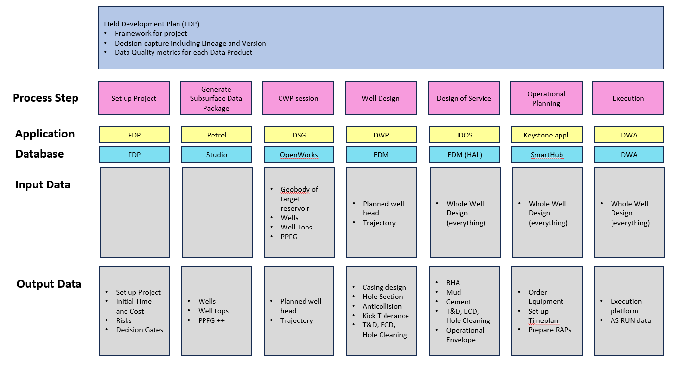
Related initiatives¶
Related initiative: WellMate (the Digital Drilling Program)¶
Contact: Christian Elle (backend)
WellMate is an application developed by InformatiQ to pull information from other sources to assemble the data needed for a Drilling Program (including trajectory, casing design, PPFG, etc..). The application features a “pdf printer” to export the data for conventional deliveries to authorities and partners.
The project is backed by Yggdrasil asset that have stated that they are entirely dependent on a smart solution to quickly produce Drilling Programs (automation). This is because they do not have the manpower to write all the Programs (55+ ea wells). The delivery date of the solution is 1st August 2024.
It is important that other subscribers such as InformatiQ, DWOS, DWA, IDOS are able to “get” the same PPFG package. Hence, the method for exposing the PPFG data must be considered in this context.
Related initiative: Current DWP workflow for importing PPFG (2 ea curves)¶
Contact: Christian Borsheim
-
EDM only has two containers for curves (1 ea for Pore Pressure and 1 ea for Fracture Gradient). The component “Subsurface Essentials” allows importing of new revisions and rewriting of existing revisions. The non-active curves are stored in PostGres. You may separate the revisions (and hence different curves) by naming convention. Eg “Minimum Pore Pressure Rev1”, superseeding “Expected Collapse Pressure Rev2.3 From Gunnar_2144124”. This is not a sustainable solution, but can be used in the short term.
-
EDM does not support curves with ~500+ data points (TVD vs pressure): the system crashes. Douglas–Peucker algorithm is applied on import to DWP (smoothening the curve).
-
We can transfer PPFG and WBS today So, DWP can pick it up and have been able to for ages. Pete Heavey will rightly not permit this until the data governance (wellbore-PPFG linkage) issue in DWP is resolved. Whether the BEST way is to take it from OW is debatable – now I believe it should come from Petrel Studio.
Below snapshot from the Import workflow in DWP.
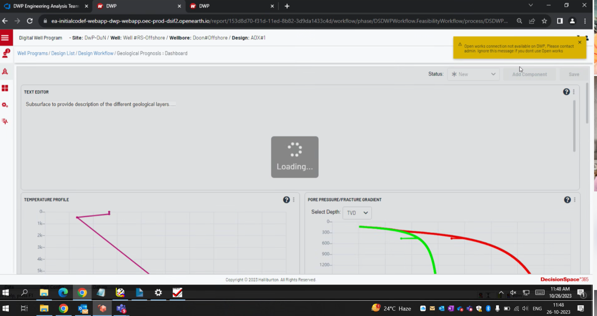
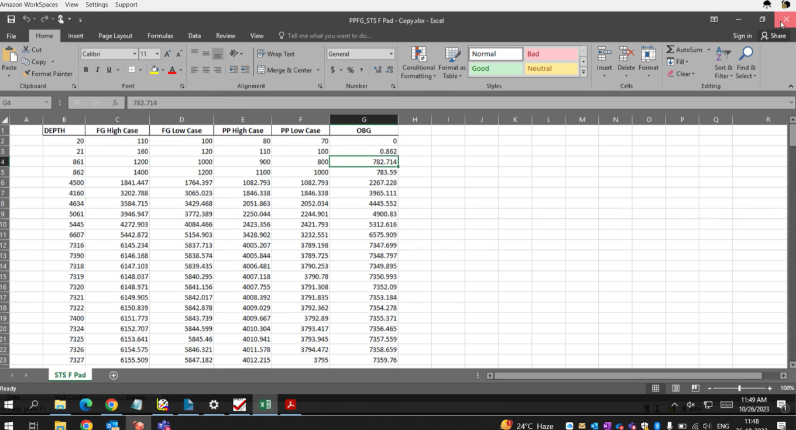
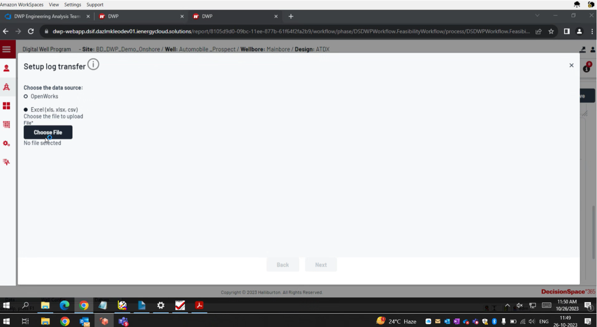
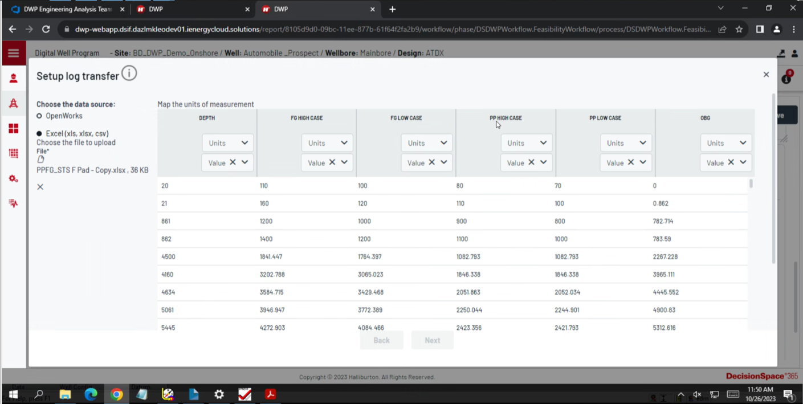
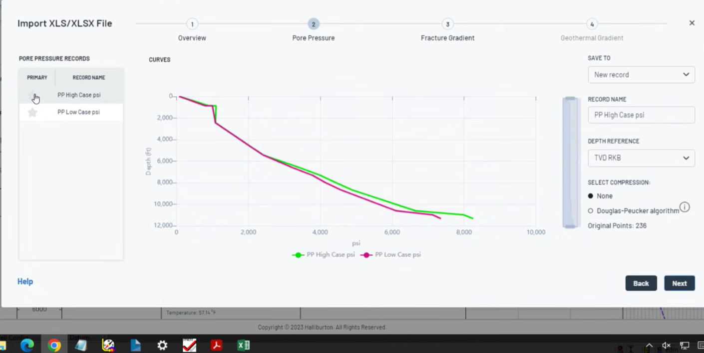
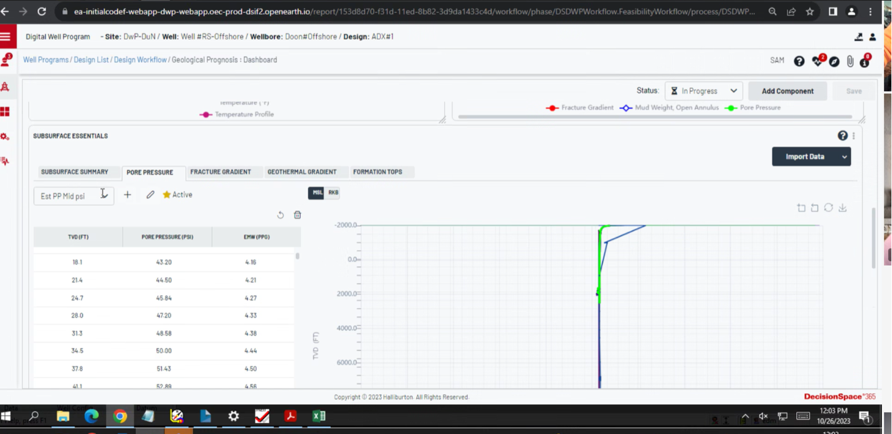
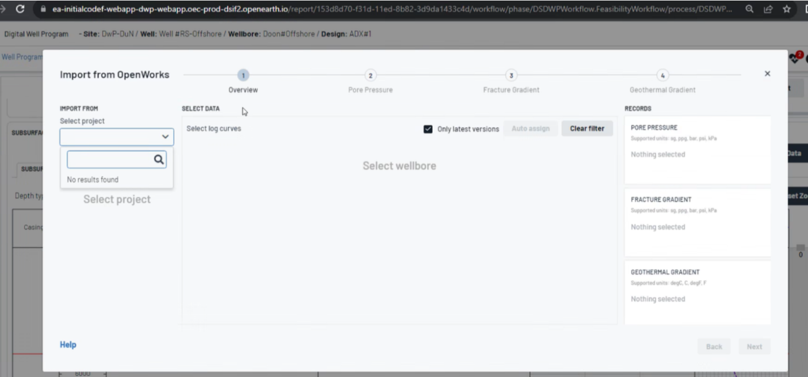
Related initiative: DWP expansion of Subsurface Essentials component with more PPFG curves¶
Contact: Christian Borsheim
Currently (07.07.2024), DWP application is limited to 1 ea Pore Pressure curve and 1 ea Fracture Gradient curve. This has limitations towards the well engineering workflows, which ideally would allow for different combinations of curves to be used from all BMS-required curves (range of PP, range of FG, range of minimum horizontal stress (shmin), OBG, CG). Ideally, there would be a logic to extract “the worst case scenario” out of a set of curves for input into the simulations (an example being a combined worst case of Pore Pressure and Collapse Gradient as the “lower pressure limit. For example, the Pore Pressure could be the lowest limit for the first 2000 mTVD and the Collapse Gradient could be the limit for the last 1000 mTVD of the well).
In order to address this, the DWP R&D team is working on an expansion of the Subsurface Essentials component to be deployed in August 2024 which allows for the manual import of all 11 curves. In the backend, this means that 9 additional containers are created in PostGres for the missing curves (this to be verified by DWP PO).

Current EDM schemas¶
-
Container for WBS, OBG, Shmin (or any range of PP, FG or previously mentioned); does not exist.
-
Container for Faults is the same as Formations.
-
No container for UCS, Friction angle, PVT data identified yet. PVT data is used in BOWK suite.
Current EDM schemas: Trajectory¶
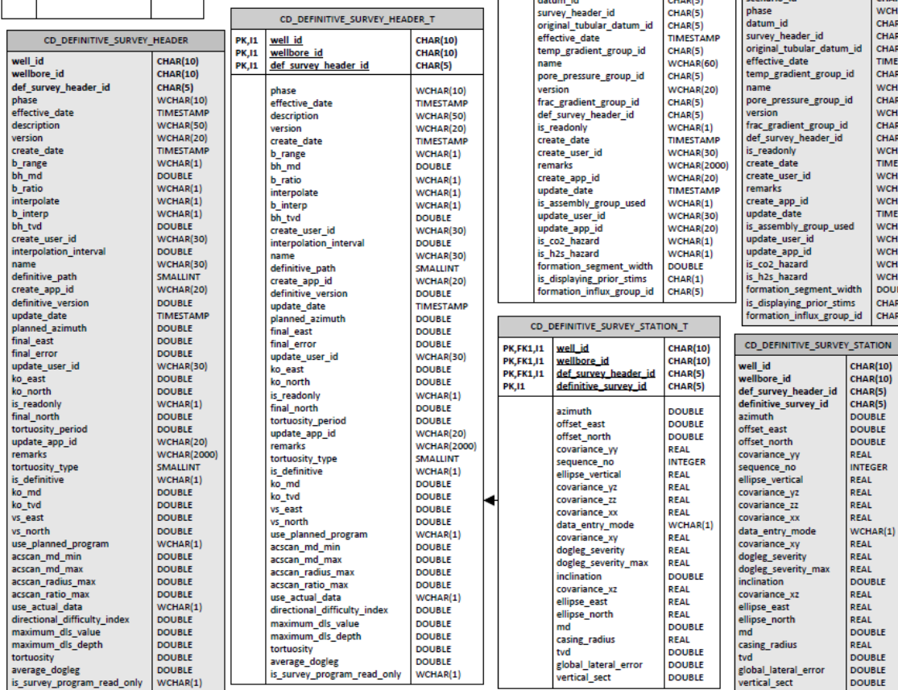
Current EDM schemas: PPFG¶

Current EDM schemas: Formations¶
mg src="./images/PPFG-14.png" style="width:4.54167in;height:6.5in" a a="A screenshot of a computer Description automatically generated" />
List of required data¶
In general, all are repeatable objects unless specified a singular object.
| “Data Product” | The data it includes | Current status |
|---|---|---|
| Metadata |
|
Standard metadata. |
| General well info (well name, wellbore) (singular entity) |
|
System of Reference is incomplete. We can use EDM ID as “least bad solution” now. |
| Location data (singular entity) |
|
Can come from CWP or manually in COMPASS. Offset Wells Analyzer potential source for offset wells listing. |
| Well Trajectory (singular entity) |
|
Can come from CWP or manually in COMPASS. |
| Pressure Profile (singular entity) |
|
Put in manually in DWP (Stresscheck) |
Proposed schema¶
Note: PPFGDataset is defined by OSDU as a "Work Product Component". This means it is a json schema resting on top of conventional files. Allowable file types for PPFGDataset.1.2.0: WITSML, LAS2, LAS3, csv.
https://community.opengroup.org/osdu/data/data-definitions/-/blob/master/E-R/work-product-component/PPFGDataset.1.2.0.md
-
Attributes: In general, use OSDU WKS. Attributes will be mTVD against pressure for 1 pore pressure and 1 fracture curve at is most barebone. At its best, it will include a range of pore and fracture gradients, authors, author date, lineage information, datum information, legal and access, version, confidence, data quality measures, technical maturity, allowable useage areas, etc..
-
data types: json, csv or reference to source. "data-savy" people to decide; not domain experts
-
constraints: access rights, region, tight groups for exploration wells, must be tied to trajectory
-
relationships to other elements: trajectory and datum (which again are related to the rest of the Wellbore hierarchy)
-
relationships to other elements in the data unit (e.g. functional dependencies): dependent on changes and updates to the simulated model of the asset and trajectory updates.
-
Include maturity information according to "51-001619 PPFG review template": Well type, project stage (DG)
-
Analysis type and Application: 1D, 2D, 3D, basin, etc.. in Drilworks, Petrel, Unix, etc..
-
List key offset wells and data types from these offset wells.
-
Necessary with Overburden versus Reservoir separations (ref. Valhall)?
-
Connection to model_ID
-
Need to be specific on WHICH PPFG we want (latest or the one used for Well Design)
-
-> OpenWorks creates new IDs when received from Petrel.
-
Number of points? Every 1,5,10 meters?


Proposed alternatives¶
There are many roads to Rome. Future DataOps to make a decision on Cost/Timeline.

Alternative A: Pull from OpenWorks¶
DWP already has a solution for pulling 1 Pore Pressure and 1 Fracture Gradient curve from DSG (DecisionSpace Geosciences application by Halliburton). This functionality was halted due to improper governance: User could tie any PPFG from any well to the Design they were working on.
This solution proposes an upgrade to that code to only be able to pull curves that are consistent with the Design_ID that the engineer is currently working on. In order to do this, we need amongst others, the trajectory_ID (can be represented by EDM def_survey_header_ID) to be present on the curves as metadata.
It is likely that it is possible to expand such a solution (OW pull to DWP) to other initiatives? OW curves are available through DSIS. Coupled with the same limitations to the OW query (design-locked); this should be feasible.
There is an argument to move PPFG not only from Petrel to EDM directly, but also to OW. “We would like to be able to use this data, especially the collapse data, but other properties in 2d and 3d such as UCS in CWP. Primarily for multidisciplinary visualisation. Barriers to doing this have been software instability in DSG for the last months, and unavailability of the Petrel PPFG/RM models.”
PPFG should be considered in context of the CWP session. It makes sense for the author (Henrik Næsgaard) to define a loop for trajectory and then tie all Data products to the same loop. In other words, when there is a change in the trajectory, Petrel Studio publishes a new set of PPFG, OBG, CG, Shmin, UCS, FA, Picks formations, Picks faults.


Alternative B: Reverse-Engineer ROCQ Connector¶

Alternative C: Whole new solution (example Backbone or ADME)¶

Alternative D: Data Product version¶
By Data Product Support Team.
AS-IS data architecture

- For a more detailed description, miro board from ‘walkthrough 23 Sep’. By Albert Kingma.

TRANSITION data architecture (MVP)
Proposed MVP described below. Use case: Christian Borsheim; Transfer PPFG data from Petrel to DWP.
The solution is broken down into 5 elements:
-
Standard output from Delfi/Petrel.
-
Extract data
-
Transform data to OSDU compliant format
-
Store data
-
Consume data in DWP

Hi-level description of solution. Bold means short term solution.
-
Expose PPFG data from Petrel to Petrel Studio
-
No excel sheet to be exported.
-
Prepare and QA/QC data from Petrel in a standardized format. Rock Mechanics & Geology Ops.
-
Provide a standard format/schema with naming convention -> PeteH, Samad, Robert Maclean
-
QA/QC by Data Manager (tag the data for exposure) -> Robert Maclean.
-
Also need to test data from Delfi.
-
-
Extract PPFG data from Petrel Studio
-
Testing with Cognuite API to extract data
-
Alternatives: 1) via Cognuite API (short term) 2) via SLB SDK (long long term) 3) via S-drive (not recommended) 4) others
-
-
Do necessary transformations
-
Guided by OSDU, map data into Well Known Schema.
-
Alternatives: 1) Cognuit (not recommended), 2) HAL (investigate) 3) ABP azure pipeline via python notebook 4) via Nitro platform.
-
-
Publish and Share data in a data hub
-
Preferable HAL OSDU instance. Make design choices to maximize OSDU adaptation.
-
Alternatives: 1) Direct with HAL ADME api’s. OR 2) via ABP APIM
-
-
DWP to consume PPFG data
- Alternatives 1) DWP read from HAL ADME. 2) DWP read from APIM. 3) DWP to manually import excel sheet.
TO-BE data architecture
The below diagram is used for discussions. Some strategic decisions need to be made.
- See FutureOps miro board for original diagram.

Discussion:
-
Diagram show a possible data architecture with 3 ADME instances.
-
The idea is to visualise how to share data between tenants via APIM APIs.
-
Concern: how do we keep data in sync if it is duplicated in the tenants?
-
The data products are placed according to ‘governing tenant’
-
Investigate a version without APIM, that has direct access to HADME api’s.
-
Investigate the role of Gravitas Edge, used to visualised PPFG curves for ExpRes. How is data exported into Gravitas?
-
Data architecture: should investigate which pattern to use. Is Event Hub an option? Also see this guideline page and questions.
-
Is PPFG excel version exported in LAS format? It seems so.
Alternative E: Grant’s perspective¶

This diagram is from Grant and describes the larger picture. For PPFG dataset, the data flow can be;
-
Petrel generates PPFG curves.
-
PPFG workflow is run in Petrel.
-
RoQC Governance Tool ensure that the naming standards are compliant.
-
The data is pushed into Studio (manually?).
-
Cognuit pulls data once it is tagged ‘approved’ by a Data Manager.
-
Then Cognuit can push data into OpenWorks DB, , which again push data to the ‘master’ EDM DB, but since EDM can only store 2 PPFG curves (of 11 or more), a way around is to store a full dataset in DWP’s PostgreSQL DB. This may be great for DWP, but solution must be able to scale into other consumers too. The goal is to store in an ADME instance. It really should store the PPFG data in SLB’s ADME, as they are the owner of the data set, then Hal pulls data from this tenant (the future Microsoft Mesh). Do we have any interim solution today? (APIM?)
Discussion with KjetilØ:
-
Should get as close to source as possible. Export directly from petrel /governance plugin to xADME?
-
Need to ensure xADME contains sufficient rec data such as wellbore etc (dependencies).